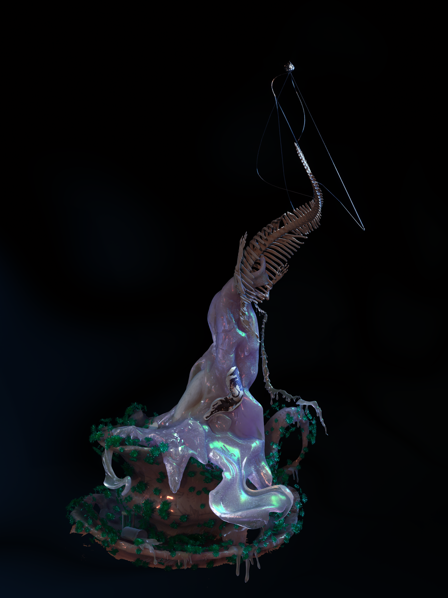
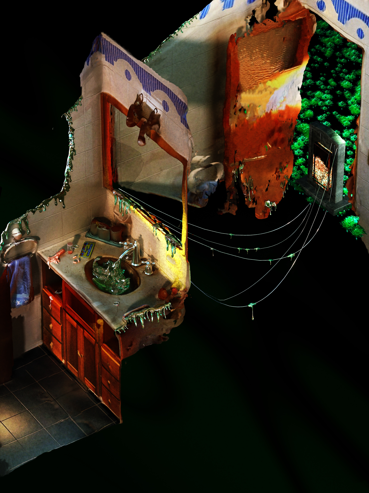

Fin de Fiesta
A landscape out of time. A depository of nightmares aestheticized through memory.
This series draws from TraumaCore aesthetics, an online visual language that distills emotional residue into surreal, dreamlike spaces. It belongs to the same emotional terrain as DreamCore and WeirdCore, internet Aesthetic genres that displays dreamlike, almost comforting settings ,subtly distorted by an unsettling presence. The event itself is not presented, only the traces it left behind.
Here, liminal spaces play a key role—deserted rooms suspended in time, echoes of a party that may have never happened, thresholds between one reality and another. Trauma is here an in-between space, a shift, a bridge between two versions of the self. These images register that suspension, a memory held between decay and transformation.
THE PERSISTENT MESSAGE (formerly EL INSISTENTE MENSAJE)
The message insists. It always returns in the form of a reflection.
We were figures moving over a red surface. The shadows of the trees reached us without warning. That’s when we realized we were dreaming of different landscapes.
There’s always something in the image that wants to say more.

MYTH OF THE DYING WATER (formerly MITO DEL AGUA MURIENTE)
Every dream begins in front of clear water. Every mourning ends in the depths of a reflection. The myth doesn’t speak of what was, but of what is slowly fading. Every living water is, at its core, water about to die. A liquid funeral. A fragile beauty repeating itself. [Visit]>
Every dream begins in front of clear water. Every mourning ends in the depths of a reflection. The myth doesn’t speak of what was, but of what is slowly fading. Every living water is, at its core, water about to die. A liquid funeral. A fragile beauty repeating itself. [Visit]>

FIN DE FIESTA
The absolute of reflection. The mirrored image is more real than the real because it is stripped of body. It is pure form. A dream unsure if it’s ending or just beginning. Echoes of a vanished celebration, where thoughts drift like mental flies. The water holds the last rhythm.
The absolute of reflection. The mirrored image is more real than the real because it is stripped of body. It is pure form. A dream unsure if it’s ending or just beginning. Echoes of a vanished celebration, where thoughts drift like mental flies. The water holds the last rhythm.
